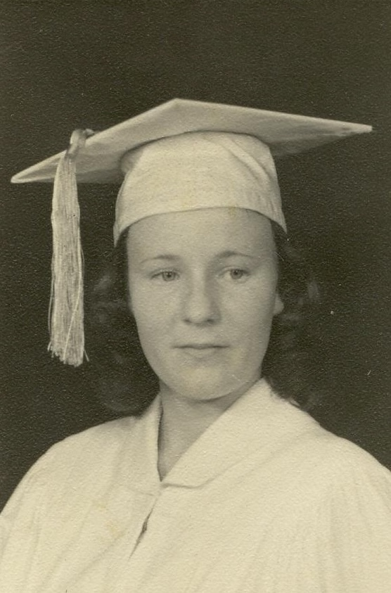

Deloris Herrin
Born 1942

Life Events
Born: 1942 — Lafayette County, Florida, United States
Family
Father: William Levi "W.L." Herrin Sr.
Mother: Laura Etta Palmer
Siblings
Military Service
No military service information has been added.
Biography
Deloris Herrin was born in 1942 in Lafayette County, Florida. She is a daughter of William Levi Herrin and Laura Etta Palmer.
Photos
No additional photographs have been added.
Sources
-
1945 Florida State Census — William Levi Herrin Family
Type: CensusThe 1945 Florida State Population Census records the household of William Levi Herrin (listed as W. L. Herrin) and his wife Laura Etta Herrin, living on Route 2 near Mayo in Precinct 3, Lafayette County, Florida. Their household includes seven children: James, Gladys, Mary Lou, Dorothy, Billy, Evelyn, and Deloris. Evelyn was recorded as age 10 and attending school. The youngest child is identified through family research as Deloris Herrin, although her name appears to have been recorded differently, possibly as 'Dean,' in the original census. Immediately preceding the Herrin household is the household of Louie Singletary, brother of Dewey Singletary. Louie's household includes his wife Lessie and their young son Randall. The consecutive entries document the presence of both branches of the family in the Mayo area in 1945.
Location: Precinct 3, Mayo, Lafayette County, Florida, United States
Household: William Levi Herrin Household
Household Members:
- W. L. Herrin, age 52, laborer
- Laura Herrin, age 46, housewife
- James Herrin, age 24, Army
- Gladys Herrin, age 20, laborer
- Mary Lou Herrin, age 17, student
- Dorothy Herrin, age 14, student
- Billy Herrin, age 12, student
- Evelyn Herrin, age 10, student
- Deloris Herrin, age 6 (name appears as 'Dean' or similar in the original census)
Supports: Residence of William Levi Herrin and Laura Etta Palmer in Lafayette County, Florida, in 1945, Identification of James, Gladys, Mary Lou, Dorothy, Billy, Evelyn, and Deloris as members of the William Levi Herrin household, Approximate birth years of the Herrin children, Evelyn Herrin's residence in her parents' household at age 10, School attendance of several Herrin children in 1945, James Herrin's reported Army service in 1945, Residence of Louie Singletary and his family in Lafayette County, Florida, in 1945, Consecutive enumeration of the Singletary and Herrin households
-
1950 United States Census — William Levi Herrin Household
Type: Census1950 United States Census recording William and Laura Etta Herrin and five of their children in Lafayette County, Florida. William was still working as a farmer.
Location: Lafayette, Florida, United States
Household: William L. Herrin Household
Household Members:
- William L. Herrin, head, age 58
- Laura E. Herrin, wife, age 55
- Dorothy Herrin, daughter, age 20
- Billy Herrin, son, age 17
- Evelyn Herrin, daughter, age 16
- Shelby J. Herrin, daughter, age 11
- Deloris Herrin, daughter, age 7
Supports: William Levi Herrin and Laura Etta Palmer residing in Lafayette County, Florida in 1950, William Levi Herrin working as a farmer, Dorothy, Billy, Evelyn, Shelby Jean, and Deloris residing with their parents, Deloris Herrin recorded as born in Florida